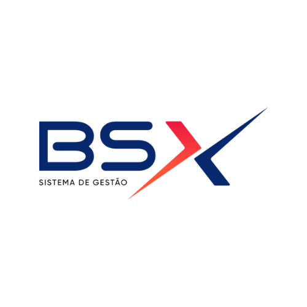
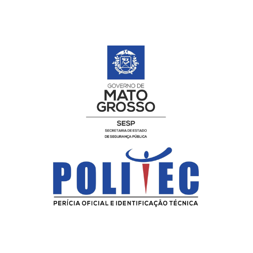
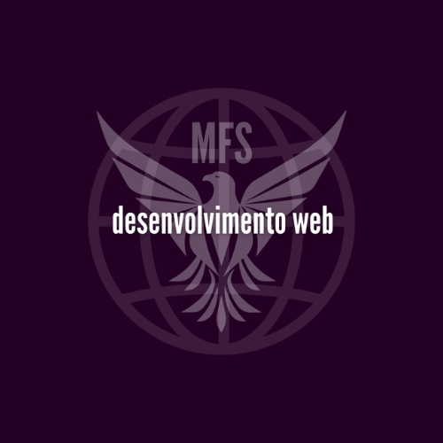

Suporte Técnico

Trabalhei durante 6 meses como suporte técnico na Bsx Tecnologia, onde desenvolvi habilidades iniciais em manipulação de bancos de dados usando SQL Management, implementações de TEF (Transferência Eletrônica de Fundos) e softwares de gestão empresarial para diferentes setores. Também atuei no suporte ao cliente, auxiliando em fluxos de vendas, emissão e entrada de notas fiscais, atualizações de sistema e treinamento básico para usuários. Essa experiência me permitiu compreender os processos fundamentais de sistemas de gestão e atender às necessidades dos clientes de forma prática e objetiva.
I worked for 6 months as a technical support professional at Bsx Tecnologia, where I developed beginner-level skills in SQL Management for database manipulation, TEF (Electronic Funds Transfer) implementation, and business management software applied to various industries. My role also included customer support tasks such as assisting with sales workflows, invoice issuance and entry, system updates, and basic user training. This experience provided me with foundational knowledge of management systems and the ability to address customer needs efficiently and effectively.
Estágio na Politec

Atuei no setor de Identificação Civil, auxiliando nos trâmites de recebimento, gerenciamento e disponilização da nova Carteira de Identidade Nacional para a população mato-grossense. Operei o sistema interno de Identificação Civil, explorando os módulos aos quais tinha acesso e manipulando planilhas de controle interno.
I worked in the Civil Identification sector, assisting in the processes of receiving, managing, and issuing the new National Identity Card to the population of Mato Grosso. I operated the internal Civil Identification system, exploring the accessible modules and managing internal control spreadsheets.
Desenvolvedora Web

CLIQUE NA IMAGEM PARA ACESSAR OS MEUS PROJETOS
TAP ON THE IMAGE TO ACESS MY PROJECTS
Desde o início de 2024, dediquei-me intensamente ao aprendizado de desenvolvimento web, explorando tecnologias fundamentais como HTML, CSS e JavaScript, bem como frameworks modernos como React e Node.js. Durante esse período, desenvolvi diversos projetos práticos, incluindo websites responsivos, aplicações dinâmicas e sistemas backend eficientes. Um dos projetos mais desafiadores envolveu a criação de uma aplicação completa de gerenciamento de tarefas, integrando um design intuitivo com uma API robusta. Esse processo não só me ajudou a consolidar conhecimentos técnicos, mas também a aprimorar habilidades como resolução de problemas, organização de código e boas práticas de desenvolvimento.
Since the beginning of 2024, I have been deeply committed to learning web development, exploring foundational technologies such as HTML, CSS, and JavaScript, along with modern frameworks like React and Node.js. During this time, I worked on several practical projects, including responsive websites, dynamic applications, and efficient backend systems. One of the most challenging projects involved building a complete task management application, integrating an intuitive design with a robust API. This process not only helped me solidify technical knowledge but also enhanced skills like problem-solving, code organization, and development best practices.
Projetos Acadêmicos

Desenvolvi sistemas de controle de estoque e relatórios em Power BI, aplicando metodologias ágeis para entregar soluções eficazes e bem estruturadas.
...

...